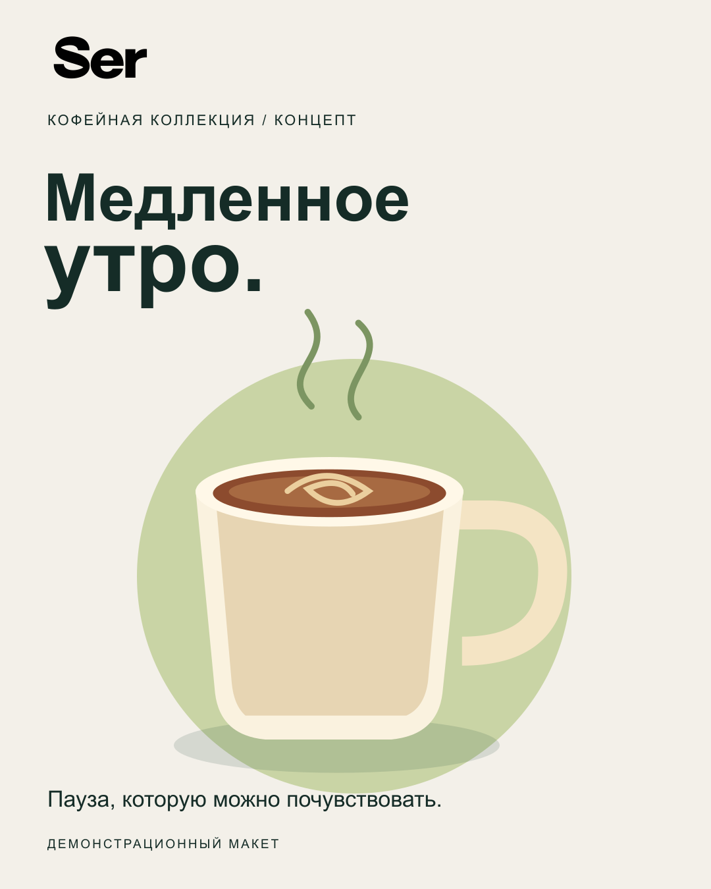

СЕРАФИМ МЕЛЬНИК / ДЕМОНСТРАЦИОННОЕ ПОРТФОЛИО
Идея становится
результатом.
Три самостоятельных примера по мотивам реальных запросов на фрилансе. Можно посмотреть, скачать и проверить.
Посмотреть работыВИДЕО И АНИМАЦИЯ
30 секунд.
Одна история.
Вертикальная заставка с крупной типографикой, движением формы и собственным звуковым ритмом. Работает и без звука.
Самостоятельный motion-этюд. Графика и звук созданы для примера; чужой съёмки нет.
ГРАФИКА И СОЦСЕТИ
У одного бренда
много форматов.
Вымышленная кофейная коллекция: от вертикального поста до широкой обложки. Одна иллюстрация, единая типографика, девять отдельных иконок.


Публикация · 1080 × 1350
Концепт, не работа для реальной кофейни. Макеты для цифрового размещения; подготовка к печати не заявляется.

АВТОМАТИЗАЦИЯ И ИНТЕГРАЦИИ
Повтор запроса.
Один заказ.
Обработка заказов с проверкой товаров, резервированием остатков и постоянной очередью доставки. Сбой не теряет заказ, повтор не списывает товар снова.
Ниже — воспроизведение сохранённого тестового прогона, не подключение к реальному магазину. Рабочая CLI-логика находится в исходниках.
Запустите воспроизведение: 8 событий, включая повторы и ошибки.
| Заказ | Результат | Пояснение |
|---|---|---|
| Результаты появятся здесь | ||
ПОЧЕМУ ЭТИ ТЕМЫ
Сначала посмотрел
на задачи.
25 ноября 2026: 110 карточек в лентах FL.ru и YouDo. Среди разовых задач цифрового производства чаще встретились эти три группы.
Небольшая выборка по заголовкам и видимым описаниям, с выборочным чтением полных ТЗ. Это не статистика всего рынка. Второе и третье места делят одинаковое число наблюдений.
Методика и номера объявлений